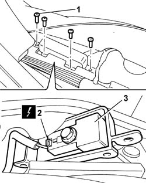
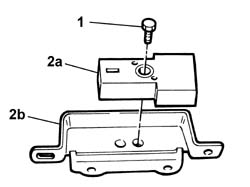

5580C40 SIDEBAG SENSOR (ONE), LH OR RH - R R
- Path
- Procedures > 55 ELECTRICAL EQUIPMENT > 5580 SPECIAL ACCESSORIES > 5580C AIR BAG SYSTEM > 5580C40 SIDEBAG SENSOR (ONE), LH OR RH - R R
- Kind
- repair procedure (removal / refitting; the operation number is the code)
- Applies to
- all engines; all production periods
- Interactive page
- https://sloeber94.github.io/elrnDB-fUlss/en/#/179007632
Applies to: all engines; all production periods
Applies to: all engines; all production periods
 Removing
Removing
 Refitting
Refitting- Position the vehicle on a lift.
Op. 7040H29 FRONT PILLAR LOWER COVER (ONE), LEFT OR RIGHT - R.R.
Op. 7040L40 REAR COMPARTMENT SCUFF STRIP - R R
- Partly raise the front floor.
1. Undo the retaining bolts.
2. Disconnect the electrical connection.
3. Remove the side Air Bag sensor complete with bracket.

Applies to: all engines; all production periods
1. Undo the retaining bolt.
2. Separate the side Air Bag sensor (2a) from the mounting bracket (2b).

Applies to: all engines; all production periods
Refitting
Removing- Position the side Air Bag sensor on the mounting bracket and tighten the fixing bolt.
- Connect the electrical connection.
- Position the side Air Bag sensor complete with mounting bracket and tighten the fixing bolts.
- Restore the position of the front floor.
Op. 7040L40 REAR COMPARTMENT SCUFF STRIP - R R
Op. 7040H29 FRONT PILLAR LOWER COVER (ONE), LEFT OR RIGHT - R.R.
- Remove the vehicle from the lift.
- Connect the negative battery terminal.
Op. 5530B56 BATTERY DRIP TRAY COVER - R.R.
- Check the operation of the system using the Examiner or other diagnostic equipment.